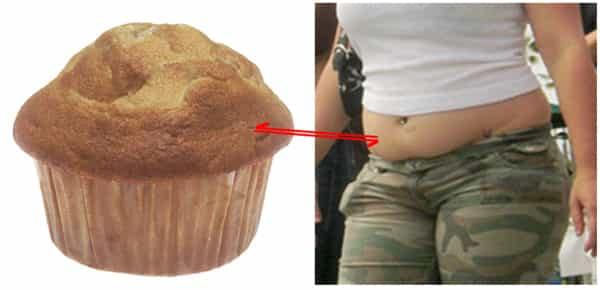

TA, a retired journalist once described as a 'Fat Shaming Innovator', spends most of his time between Scandinavia and central Europe in search of increasingly nubile 19 year olds.


She gave me a look I had only witnessed once previously, upon instructing my childhood puppy to cease the consumption of its own excrement. I had just informed my 20-year-old Swedish girlfriend Zandra that her Bacon Double Cheeseburger was spoiling my sexual appetite.
In the early days, I seldom saw her consume anything. At most some strawberries, or if she was feeling particularly peckish a few slices of cucumber on a thin piece of Knäckebröd. I suspect she may have been sneaking in some alternative sources of nutrition (a healthy woman needs between 800 and 1200 calories per day), but never once in front of me.
Like all women, she knew subconsciously that for a man, being forced to watch his woman eat is only marginally less stressful than watching her be sexually devoured by a local cad.
This understanding pleased me, and the resultant 51kg weight on a 5’9″ frame pleased me even more. Hers were the kind of legs that one could wrap around one’s shoulders and minutes later forget that they were up there. Making sweet love to a thin woman as opposed to a thick woman is as stark a difference as driving around an F1 circuit in a Lamborghini versus going around the track in a Volvo.
A few months into the courtship, things took a sudden turn. I grew suspicious of her behavior, disappearing at random intervals for around half an hour at a time. Her skin grew from matte to glossy, and her rib-cage was no longer visible!
I knew something was up. I grew increasingly stressed until one day I found the dispiriting evidence in her waste-basket. A romantic message upon crumpled grease-paper from her new beau. It read: ‘I’m Lovin’ It‘.
She was cheating on me with Ronald McDonald.
I could have callously replaced her, but instead I decided to do what only a decent man who cares about women would do; implement serious measures to control my woman’s diet. Today I share them with you:
It is widely known that our females are often entirely in thrall to the seemingly worthless opinions of her social circle, or even worse, people outside of her social circle.
While this may be an infuriating tendency at times, it can be effectively gamed to yield a positive result. Next time you are in the vicinity of your girl and her friends, start a conversation with one of her inner circle about some trendy health food (I find Goji Berries often works) and end the interaction with “And they’re really low in fat too!…..but (Girlfriend’s name) would know nothing about that!”
This will cause an estrogenic cluster bomb in the ensuing days, no doubt, but once the fallout subsides and the rough make-up sex is successfully completed, she will have it hard-coded into her memory that you are onto her filthy little eating habit, and you don’t like it one bit.
This is an easy one (and fun too)! If you live in the Western world, any given street will yield a multitude of possible recipients for your critique.
I like to walk my girl past the window of a KFC, point out the most grotesque thing grazing in front of the window and pronounce loudly “look at the state of that.” *It’s indirect, so your woman has no legitimate case to be offended but it sets an example. If she consumes more calories, men will point at her in the street. And not in a good lecherous way.
*Bonus points if the rotund fast-food munching wench hears it too!
This is a method that has been joked about for years, but all joking aside it works great. Not only that, if you’re a sensitive type, this one is unlikely to produce blubbery waterworks.
If her Birthday is coming up soon, go out and get her some high-end attire in an absolute maximum of a US size 2. (See, we’re not all Size Zero zealots, girls!). Some important points to note:

Feminism has brought forth many ills in its rise to power, but there is one benefit to women now behaving like males – we can eat their food!
Gone are the days where a woman’s daily indulgence would be a cup of sugary tea and a single glass of wine. I’ve taken cases of beer, Mozzarella cheese, full-sugar soda and even a box of 12 donuts from a girls fridge over the years. I recommend bringing a shopping bag, but your regular overnight bag should suffice.
This wasn’t an act of selfishness, but an act of kindness. My thievery allowed them to remain physically attractive to me for at least a few more weeks.
If all of these methods fail, it’s time to have The Talk. This won’t be easy, and even the most hard-hearted of you will struggle with this but it’s entirely necessary in such a grave situation.
I sat Zandra down on a park bench on a warm summer’s day just a stone’s throw from the ubiquitous golden arches and told her, “If you go in there, I won’t follow you. I’ll have to leave and I won’t come back“. With tears streaming down her face, she said “OK. I’ll just get something to drink instead”.
Victory arrived soon after in a polystyrene cup filled with low-grade coffee.
Read More: 4 Reasons Why Your Diet Sucks
{kind=link}
{kind=link}
{kind=link}
{kind=link}